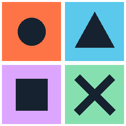

Synthetic examples for a bounded game UI handoff
These browser captures show purpose-built fixtures, not a shipped game, production bug or approved release.
Reward toast clearance
Before: toast overlaps hotbarInventory Skills Map
Reward added
Proposed: 16 px clearanceInventory Skills Map
Reward added
The hotbar ends at y=244 in each 260 px fixture. The proposed toast ends at y=180, leaving 16 px above the hotbar’s top edge at y=196. Touch targets and toast content stay unchanged.
German localization context
Clipped fixtureString ID: reward.collect_all
Proposed wrappingString ID: reward.collect_all
Source English: Collect all rewards. The candidate German string is a layout fixture and needs linguistic review. The wide button permits wrapping while retaining its text label.
Art export dimensions

Expected: 256 × 256, RGBA
Bug fixture: 256 × 128, RGBA
A reproducible crop loses the lower two frames. A visual checker must inspect the reimported four-frame asset and the manifest dimensions together.